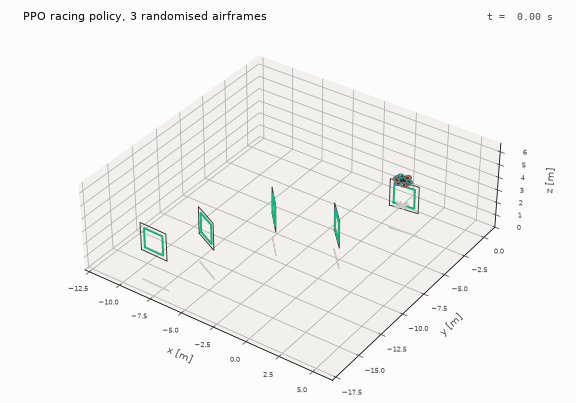

Quadrotor RL on a Massively Parallel JAX Simulator
A quadrotor simulator in JAX that flies tens of thousands of vehicles in parallel on one GPU (192 M steps/s), and PPO written from scratch on top of it. Compared with tuned classical controllers: a PID stays more precise at hovering, but on random gate courses the learned policy is about 40 % faster than a pursuit controller while finishing 98 % of them. Now training pursuer and evader drones against each other by self-play.
Code not public yet